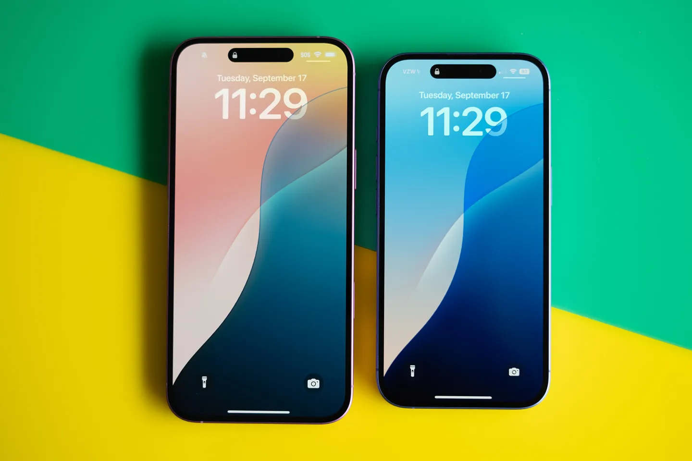
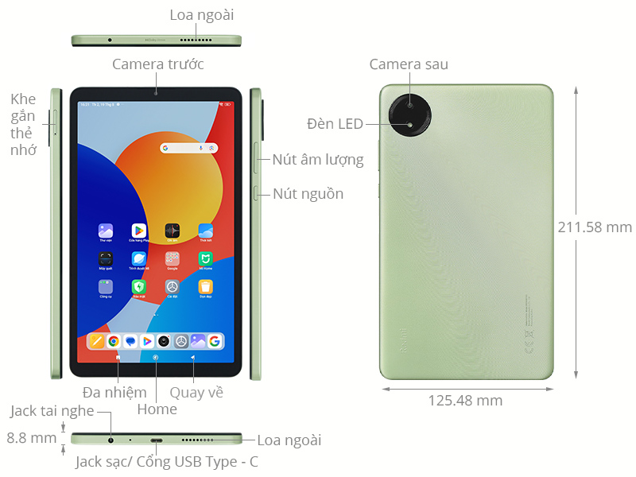
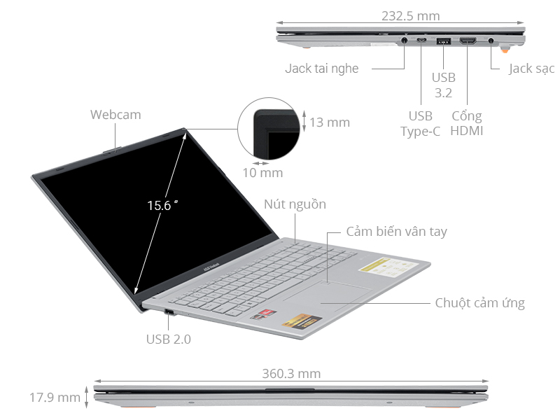

Phone
IPhone 16 sở hữu ngoại hình phong cách hơn so với iPhone 16 Pro Series, đáng tiếc là các tùy chọn màu sắc nổi bật của iPhone 16 bản tiêu chuẩn không có trên dòng Pro. Tôi cũng thích các phiên bản màu Xanh Lưu Ly trở nên nổi bật khi nghiêng ở một vài góc độ ánh sáng nhất định. Trong khi đó, một chi tiết nhỏ như phần đường viền của cụm camera chính có màu xanh đạm tạo nên độ tương phản mạnh.
Tablet
IPhone 16 sở hữu ngoại hình phong cách hơn so với iPhone 16 Pro Series, đáng tiếc là các tùy chọn màu sắc nổi bật của iPhone 16 bản tiêu chuẩn không có trên dòng Pro. Tôi cũng thích các phiên bản màu Xanh Lưu Ly trở nên nổi bật khi nghiêng ở một vài góc độ ánh sáng nhất định. Trong khi đó, một chi tiết nhỏ như phần đường viền của cụm camera chính có màu xanh đạm tạo nên độ tương phản mạnh.
Laptop
IPhone 16 sở hữu ngoại hình phong cách hơn so với iPhone 16 Pro Series, đáng tiếc là các tùy chọn màu sắc nổi bật của iPhone 16 bản tiêu chuẩn không có trên dòng Pro. Tôi cũng thích các phiên bản màu Xanh Lưu Ly trở nên nổi bật khi nghiêng ở một vài góc độ ánh sáng nhất định. Trong khi đó, một chi tiết nhỏ như phần đường viền của cụm camera chính có màu xanh đạm tạo nên độ tương phản mạnh.
